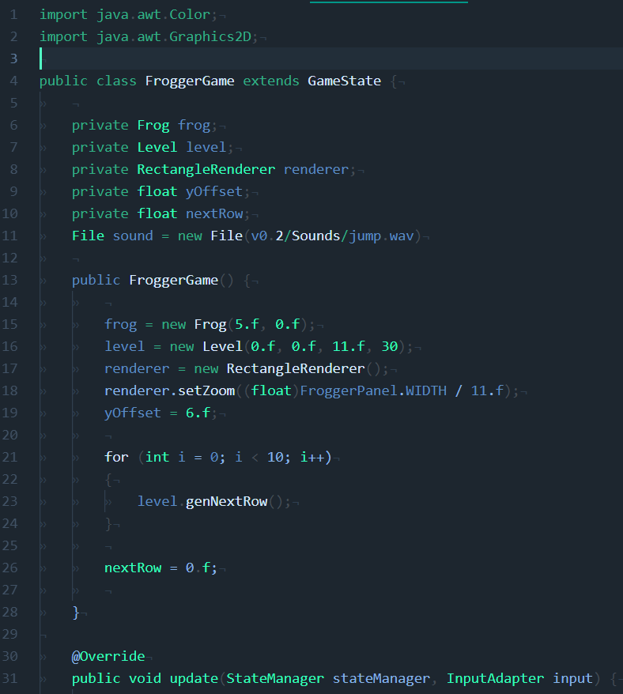
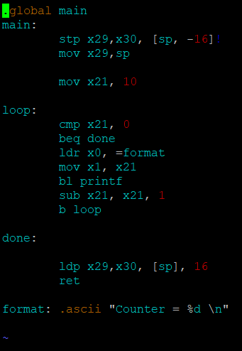

I am currently attending the University of Calgary for the BSc in Computer Science program. Computer Scientists deal with the theoretical and technical aspects of computing tecnology. While Computer Science may be a relatively new field when compared to others, it is continually expanding.

There are a multitude of modern coding languages for computer scientists to tell computers what to do. Coding languages vary from high-level languages that are easy for people to learn like python, to low-level languages that are harder for people to read but faster for computers like assembly. Learning many of these different languages can help a developer to pick the best one for the job.
At the University of Calgary there are nine concentrations that undergraduate Computer Scientists can specialize in. These specializations include Algorithm and Complexity Theory, Computer Game Design, Computer Graphics, Human Computer Interactions, Information Security, Networks and Distributed Computing, Scientific Computation, Software Engineering, and Visualization and Analytics. Each concentration deals with different ways that people use computers for buisness and everyday life.
Today's computer scientists need to know the mathematics behind algorithms to optimize their code as well as the technical skills to solve complex problems. A first-year Computer Scientist at the U of C will take multiple math and logic courses, along side their computer science courses and a coice of optional courses offered by the university.
So does any of this sound interesting to you? If you want to work with computers to help people, solve complex problems, or mak cool video games then coumputer science might me for you. Click HERE to learn more about computer science at the University of Calgary.